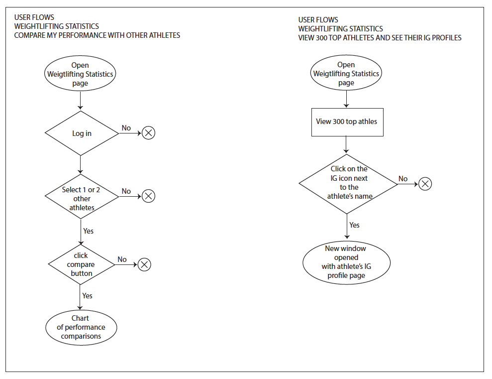
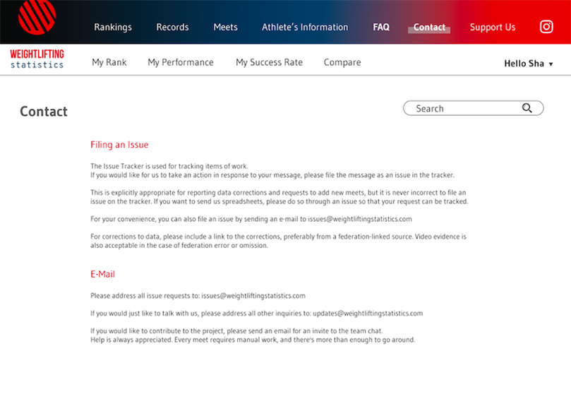
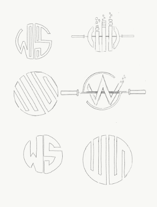
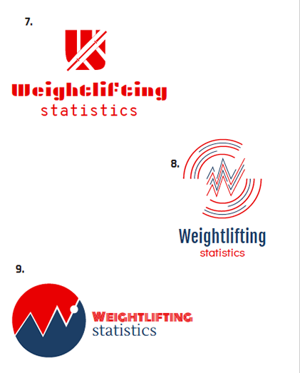
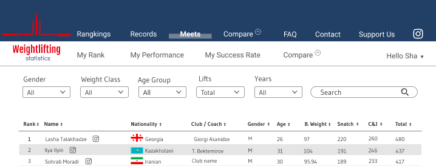

- A simple interface and drop-down menu
- The ability to search athletes by name, weight class, and event
- Simple, aesthetically-pleasing data that is easy to interpret and use
- Local-level, state-level, and world record information
- Progress tracking
Weightlifting
Statistics
Case Study
Statistics
Case Study
Roles
- UX/UI Design
- Product Design
- Visual Design
- Branding & Identity
Duration
- 17 Days
Deliverables
- User Surveys
- Competitive Analysis
- User Persona
- User Stories & Flows
- Branding
- Wireframes & Testing
- High Fidelity Mock-Ups
- Prototypes and Testing
Duration
- 17 Days
Tools
- Adobe Photoshop
- Adobe Illustrator
- Balsamiq
- Figma
- InVision
- Sketch
- Usability Hub
- Google Survey
Summary
Weightlifting is one of the fastest growing Olympic sports in the United States. The number of athletes who enter local, national, and international competitions has grown, on average, by 250% each year since the 2012 Summer Olympics, held in London, UK.
Overview
The Problem
Despite the burgeoning interest in the sport, there is much room for improvement in the Olympic weightlifting world. The user experience of the database website is the same as 15 years ago. It is challenging to access, if not impossible, to review the statistical data of weightlifting performances, to compare performances across athletes, and to see the latest world record per weight class.
The Solution
I am proposing a tool that the global weightlifting community can use to review data, compare performances among and across athletes, and make predictions as to the likelihood of success in upcoming competitions. This tool will take the form of a centralized database of competition results, which will allow athletes and coaches to track progress and compare performances.
The goal of this tool is to (1) promote weightlifting in the United States, (2) support training and capacity building among athletes, and (3) improve the sport by providing athletes and coaches with evidence-based performance data in a format that is easy to understand and act on.
This will be developed as a website and app for smartphones that will be used by athletes, coaches, club members and owners, sports analysts, and announcers at weightlifting competitions. Agile, up-to-date, and user-friendly, this website will respond to the real-time information needs of athletes, coaches, and announcers so that they can review data instantly without having to play around or adjust their layout preferences.
I hope that this tool, Weightlifting Statistics will help athletes to improve their motivation and performance in weightlifting. Ultimately, this tool could be instrumental in building a stronger weightlifting community worldwide, and particularly in the United States.
Process
Research & DiscoveryUser Survey
I have created a survey questionnaire for target users and have disseminated it through the weightlifting community (athletes, coaches, and club owners). After waiting approximately three days to receive 30 number responses, I analyzed the results.
Results
80%
would like to see an organized weightlifting database that you can easily view and understand
87%
want to compare their numbers to other athletes in the database
87%
want to see where their places at the world, country, state, city, or within the club
74%
would like to see the percentage of their success rate based off of their history
Discovery
I discovered that some of the features potential users want to see included in this website and app are:
This information will be critical in shaping my design decisions later in the website development process.
Competitive Analysis
SWOT Analysis (Strengths, Weaknesses Opportunities, Threats)
Competitive analysis is one of my favorite research methods. At the competitor level, it was fascinating to identify what is already working well, what is not working, and how to make targeted improvements. This process enabled me to determine how I could differentiate my product in the market and build a better product than my competitors.
Part of this process involved researching my competitors, whom I have narrowed down as follows:
USA Weightlifting:
https://webpoint.usaweightlifting.org/wp15/Events2/Registrations/Rankings.wp?Gender=FStrengths
- All athletes have to register on this website to receive a number for every competition.
- This website contains the full data of every athlete and competition that has occurred in the United States.
- This site contains information about all the domestic clubs and weightlifting competition results, such as weight class, snatch, clean & jerk (C&J), and the total numbers (snatch + C&J).
Weaknesses
- Only lists athletes’ basic numbers
- Users are unable to compare athlete’s individual performances or performances across athletes
- Contains no user discussion platform
- Only available as a desktop view
- Not user-friendly; slow load times, difficult to access information, unintuitive.
Open Powerlifting:
https://www.openpowerlifting.org/Strengths
- All-inclusive and free powerlifting database
- This site houses every powerlifting meet, whether domestic or international
- The data is organized, easy to view, and easy to understand
- To learn more about individual athletes, links are provided to their Instagram accounts
- Users can view the data, no login is required
- Good logo design
- Simple color palette
- Mobile view is well formatted
Weaknesses
- The list of athletes is lengthy and challenging to navigate, as all 300 top athletes are included on the same page
- It is not possible to compare performances
- The information layout is too crowded and “busy.”
- There is insufficient white space.
IWF:
https://www.iwf.net/The International Weightlifting Federation (IWF) was founded in 1905, being one of the oldest International Sport Federations.
Strengths
- It contains all the data from international meets
- Features news reports on athletes and events
- Includes basic information, such as weight class, snatch, C&J, and total.
- Lists some weightlifting clubs globally or domestically
- Shows results per competition
Weaknesses
- The layout is dated, probably 15 years old
- The landing page features information that is not curated (neither timely nor relevant to a majority of web visitors)
- There are no member interactions
- The website is for desktop view only
- Not user-friendly
Weightlifting Statistics:
Through my survey and competitive analysis, I learned the best way to enter and penetrate the market, which I describe below.
- This product will be targeted to the weightlifting community and offered free of charge.
- A “Support Us” page will be set up for the community to donate and support the product, if they believe that this service is valuable.
- All basic data information can be viewed without logging in. However, if users want to view more advanced features, such as their rank, performance, success rate, personal best, and compare performances across athletes, they must sign up and then log in.
- A top priority in building this app will be cultivating a great user experience. The data presented and all of the menus will be designed in such a way that it will be easy to use, simple to navigate, and aesthetically pleasing. To that end, this app/site will employ a modern UI and color palette. By “modern” I mean simple, streamlined, open, and clean. The data will be presented in interactive tables and graphs that are easy to view and easy to understand.
- This app/site will also have more features than the competitors noted above, including comparing performances, progress tracking, success rates, and predictors of success for upcoming competitions.
- Links to athlete’s Instagram accounts will be included next to the athlete’s name, so that users can view their social media profile and engage them.
- This tool will be created for mobile, tablet, and desktop users
User Persona
User Stories
Based on the information gathered from the surveys, and competitive analysis, user stories was created to highlight the main features of the product.Here are the top 5 stories as an athlete, as a coach, and as a club owner.
| As an athlete, I want to see the top 300 strongest athletes so I can see their names and check out their profiles and be inspired by them |
| As an athlete, I want to view my rank in the country, region, or club so I can see who are my next competitors. |
| As an athlete, I want to see the percentage of my success rate for my next competition so I can gauge the weight im going to do |
| As an athlete, I want to sign up as a member so i can get full access to the app |
| As an athlete, I want to compare myself with other athlete so I know where am I in the competition rank |
| As a coach, I want to view the rank by gender and weight class so I can strategically decide the number for my athletes in the competition |
| As a coach, I want to view the history of my athletes, so I can gauge the success rate of their next lifts |
| As a coach, I want to see a competition result, so I can see where my athletes are in the ranks |
| As a coach, I want to review the data in a pleasing format, so I will come back and use the app |
| As a coach, I want to quickly review weightlifting data and I can quickly suggest numbers for my athletes |
| As a club owner, I want to see the member data/ performances so I can track their progress |
| As a club owner, I want to compare weightlifting clubs in the country so I can see where my club is the rank |
| As a club owner, I want to improve my athlete performances, so my club gets more publicity |
| As a club owner, I want to see the top 100 strongest athletes so I can review and compare club performances |
The users stories listed above are the MVP (must haves) features of my app.
User Flows
The user stories that emerged from the surveys and key informant interviews were then converted into user flows to illustrate how the user will interact with the product and accomplish these goals.
For this, I created some simple user flows below to reflect the user survey data I received – namely, that users want the app to be simple, clean, and easy to use. These flows will be used to support the on-boarding process, compare performances, view the top 300 athletes and their profiles, view top athletes by weight class, view rankings, and see success rates.

Wireframe & Testing
The biggest challenge I confronted when creating the wireframes was determining how best to navigate users who have different knowledge needs and purposes in visiting the website. I learned to work with groups of people who have different points of view and successfully created an app that pleased every stakeholder. I believe this is an important skill to have when working in this industry.
On a related note, after building and piloting my wireframes, I received the following helpful feedback:
• Navigation:
In my first draft, the navigation layout was “too busy,” so I redesigned the page layout and simplified how the information was presented by unpacking the main menu into navigation, sub-navigation, and drop-down menus.
• Table design:
Considering that the site is (of necessity) heavily table-based, I strived to make the table more functional, so that users could manually adjust the width of columns, hide rows that did not contain pertinent information, and export data to PDF or SVG. I also made the table more visually appealing by using a zebra striped design.
• Graph design:
I redesigned the graphs to be more visually appealing. Inside the “detail view,” I included a drop-down menu so that users will be able to select which datasets they want to view.
Here are the wireframes after some revisions:
High Fidelity Mockups

In the mockup stage, I added colors, a drop-down menu, real font, wording, and graphs. During this stage, everything became more “real.” My goal was to design data tables that allowed users to scan, analyze, compare, filter, sort, and manipulate information to derive insights and tailor their training regimens accordingly. Some of the strategies I used to accomplish this involved designing interactive data tables to create a great user experience, such as: fixed headers, horizontal scrolling, resizable columns, row style zebra stripes, display density, expandable rows, quick view, sortable columns, row to details, basic filtering, filtering by columns, and searchable columns.
Once this work was completed, I sent out my mockups for testing some potential users. Some of the feedback I received and the issues I resolve are:

- The readability of the navigation area. Since I opted for a colored navigation area, I had to ensure that all of the menus were readable.
- The width of the areas containing body text were too wide. The optimal line length for body text is 50-75 characters.
- The data visualization layout was in need of improvement. The charts had to be better integrated into the page layout to achieve a clean structure. I had to make the graph more visually appealing and engaging.
High Fidelity Mockups for mobile
High Fidelity Mockups for desktop
Branding
The name Weightlifting Statistics was chosen among other ideas such as waitlist, olystats, Weighlifting Statistic. The logo below were designed to around plates, barbel, or initial WS.
Logo DesignHere are some of my initial hand sketches:

Here are some of my initial digital logos:
Here are the digital logo design that I sent out to get feedback which design they prefer:

Here are the results:
Logo #4 and 10 are the winners. Because logo#4 and #10 are tied, I sent out a preference test (A/B testing) to get more feedback.
A/B Testing
Logo #10:

Logo #4
75% voted on this logo design
Logo description:
The round red logo was meant to represent the heaviest plate (25 kg) in weightlifting.
The inside of the round logo contains a diagonal abstract initial “WS,” which is short for “Weightlifting Statistics.”
Color Palette

In the weightlifting world, the units of measure for weights are in Kilograms not Pounds, and there are color codes associated with each plate. Green is used for a 10 kg plate, yellow for 15 kg, blue for 20 kg, and the heaviest plate for 25 kg is red.
For the design of Weightlifting Statistics, I selected a white background to show the data in a zebra-striped table style. Weightlifting Red was chosen as the primary color of the logo to symbolize being strong and bold. Power Blue was chosen as the main color for the brand, as it communicates prominence, importance, and confidence, without creating a somber tone.
A bold grey was chosen as the darkest contrast for font color, or any other media used. Ultimately, the design style of the brand was intended to be clean, simple, and modern.
Bebas Neue was chosen because this font has good weight to represent weighlifting aesthetic. Gudea was chosen because this font is modern, open, simple, and easy to read, which is perfect to be used for statistic website.
With all the survey data and feedback, I was confident to start the prototypes both for desktop and mobile.
Final Product
I sent out the prototypes to be tested, here are some feedback:
• Navigation menu
Compare and Compare me are very similar so just combine them into one
• FAQ - How does this site work..?
You should put this at the top and use it as an opportunity to talk about
what this site is about, which in my eyes, is creating a centralized data-
base of meet results that allows an individual to track their meet prog-
ress while also comparing against others. Save the technical details for
a separate question

• Signup flow
Re-entering email & password seems a bit overkill. Will there be an email
verification process? if so, I think that's enough.
• Sign in page:
Google logo was incorrect. I used Google+ logo instead of regular
google logo to sign in.
• Navigation menu on mobile:
Too small, you can blow it up to full screen
Conclusion
This project was surprisingly fun to deliver. When I started the project, I was concerned that it would be challenging to execute, since I knew it would be table-heavy, with lots of statistics databases. However, after doing a lot of research on the competitors and getting feedback from potential users, I learned how to present the requisite data in a visually pleasing and easy to understand format.
In short, I was guided by the assumption that data is meaningless without the ability to visualize and act on it. Through my product – Weightlifting Statistics – my goal is to provide the weightlifting community with a tool they can use to not only access the data they need to improve upon their performances but also give them a superior user experience.
Through this project, I learned that a good user interface design should be derived from human goals and behaviors. In turn, the user interface impacts behavior, which drives further design decisions. In subtle and unconscious ways, user experience alters how humans make decisions. What is seen, where it is presented, and interactions all influence actions in subtle and complex ways. It is important to make design decisions that lead to a better user experience, and I hope to have done that through Weightlifting Statistics.
Lesson learned...
What worked?
Simple navigation layout
Avoid too many menu choices for users to deal with
Bigger fonts is helpful for users
Cancel menu or back/forward buttons
Link to IG (social media)
Zebra style table
Interactive table
Simple on-boarding process
What didn't?
Complicated navigation layout
Background color which doesn’t have enough contrast with the foreground colors
Redundant entering information process
Small navigation menu on mobile
Visually unattracted graphs
What were your doubts going into the project?
Logo selection
Navigation menu
Navigation layout
What users needs and goals
How to create a great user experience
What surprised you the most?
Too many processes that I thought simple enough but they could be even more simpler
Presenting data with interesting table design is fun to do
People get easily intimidated with too many data presented on a page
What would you have done differently if given more time?
Make the data table more interactive
What did you learn while doing this project?
I learn a lot about table design.
How important it is to present complicated data into simple understandable format
How will you use that information in the future?
I will always put user needs and experience on top priority to make my design decisions.
Always ask for feedback from potential users and use it to direct the next step.
Get in touch